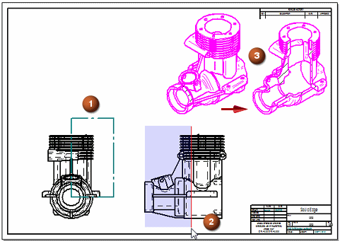
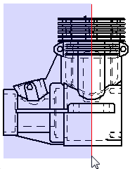
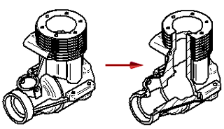

Create a broken-out section view

-
Choose the Home tab→Drawing Views group→Broken-Out command .
-
Draw the section profile (1) by doing all of the following:
-
On the working sheet, click a drawing view to be used as the source view to define the section profile.
-
Draw a closed profile that defines the outline of the area you want to break out. When drawing the profile, you can press Shift to draw lines at 15 degree increments.
-
On the ribbon, click the Close Broken-Out Section button.
-
-
Set the extent or depth of the section (2):
-
Position the cursor over a drawing view that is orthogonal to the source view where the profile is drawn, and move the cursor across the geometry.
A red depth plane line moves with the cursor. The shaded rectangle attached to the line represents the depth to which the profile will cut away the model.

-
Do one of the following:
-
To define an associative extent depth, click a keypoint (such as a center point, end point, or midpoint) or a centerline.
-
To define a non-associative extent depth, you can:
-
Press Shift while you click a keypoint or centerline.
-
Type a value in the Depth box on the command bar, and then press Enter.
-
Click in free space in the current view.
Tip:-
The section extent depth is measured from the face on which you drew the profile.
-
To control the increments by which the distance increases as you move the cursor, enter a value in the Step box on the command bar.
-
-
-
-
Select the drawing view you want to break out (3). You can select the drawing view on which the profile is drawn, or another drawing view.
The broken-out section is applied perpendicular to the plane on which the profile is drawn.

-
If the model contains holes and revolved features with centerlines, you can use the Automatic Centerlines command to extract the centerline annotations into the drawing view where you define the extent. If there is a centerline parallel to the depth plane line, then you can define an associative depth value by clicking it.
-
After you select the drawing view to be broken out, the drawing view is processed, and the profile is hidden. To modify the profile of a broken-out section view later, see Modify a broken-out section view.
-
Problems can occur when the Broken Out Section View profile is constrained to geometry that is modified or removed by the Broken Out Section View itself. This only occurs when the Broken Out Section View profile is applied to the same drawing view on which it is defined. In most cases, constraints will simply be deleted automatically, however, rare conditions have occurred where the profile actually moves after the Broken Out Section View is updated.
How do I
Modify a broken-out section viewCreate a broken view
Break an isometric view with a break axis
Connect a break line at a distance
Display break lines and cropped edges in a broken view
Modify break lines in a broken view
Copy break lines between drawing views
Remove inherited break lines
Learn more
Broken viewsLook up more details
Broken-Out commandBroken View command
Broken View command bar
Inherit Break Lines command
Remove Break Line Inheritance command